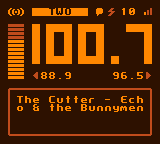

Orange FM Manual
Compatibility
Orange FM only works on the DMG (Original), MGB (Pocket), and CGB (Color) models of Game Boy, due to their inclusion of a audio input feature on the cartridge header. Game Boy Advance models WILL NOT work. Neither the FunnyPlaying FPGBC or Analogue Pocket is compatable at this time either.
Tuner

- Up/Down: Adjust volume
- Left/Right: Switch presets
- A: Seek
- B (Short Tap): Toggle Mute
- B (Hold): Update signal str while held
- B (Hold) + Left/Right: Manually tune radio frequency
- B (Hold) + A: Enter focus mode
- Select: Toggle preset
- Start: Switch to Settings
Settings
Show photo of settings with breakdown of icons
- Left/Right: Switch page
- Up/Down: Change selection
- A: Change setting
- Start: Switch to Tuner
Antennas
Internal Antenna
Orange FM has a built-in internal antenna that is used when nothing is inserted into the 3.5mm jack. While it is possible to get decent reception of strong signals, you may find that reception is quite positional - you may need to experiment with the Game Boy's orientation to get the best quality signal.
External Antennas
For best reception, you'll want to have an external antenna connected. You have many options for external antennas, as the antenna circuit is quite flexible. The general rule - the longer the better (at least up to 1.5 meters). The sleeve (ground) of the jack is connected to the antenna circuit, so you can make your own antennas buy wiring speaker cable or similar to a 3.5" plug. Or you could purchase a 3.5mm aux cable and cut it to length!
Update Modes
- Sig + RDS: Signal strength information will be updated in the background. The station text (RDS) will be synced automatically if data is available. Audible interference noise may be present depending on the signal strength. This mode works best with an external antenna attached.
- Sig: Signal strength information will be updated in the background. No station text (RDS) will be synced. Audible interference noise may be present depending on the signal strength. This mode works best with an external antenna attached.
- None: No data will be updated in the background. Signal strength can be updated manually by holding B.
Focus
The "focus" feature allows you to switch to a alternate update mode by pressing B + A. For example, you could have your update mode be "Sig + RDS", and then enter focus mode to temporarilly switch to "None". Or, in reverse, you could have "None" as your default mode, and enter focus to sync RDS if you'd like to get the name of the current song.
Focus additionally serves as a customizable lock feature, disabling keypad input except for your chosen wake keys. You can even have the display turn off, to save additional power on an original Game Boy display.